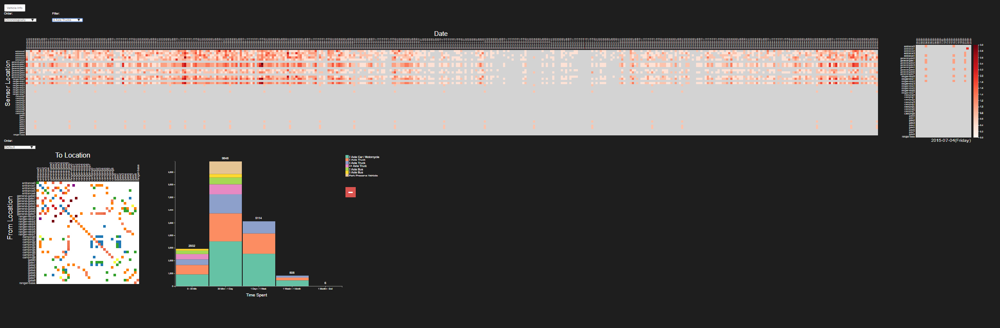

Electronic Visualization REU Internship
Overview:
The SENSEI Project is about creating a new type of camera that can be used to capture images/videos in 360 degrees which include three-dimensional information about all the objects rendered in the scene. In its current state, the project predominantly deals with two different camera designs - stereo design and mono design. More Info
Project Members:
• Professor Dan Sandin – Project Supervisor
• Haoyu Wang – PhD Student
• Bartosz Kupiec – Undergraduate Student
• Dimitar Kirilov – Undergraduate Student (Me)
Work:
The SENSEI Project was a collaborative work and was initially introduced to my partner (Bartosz Kupiec) and I in the beginning of May 2017, and the work we did carried over into our Fall 2017 semester. Together with Bartosz, we did the following (summarized):
• Utilized Unity 3D, Blender, and OpenCV in order to simulate real world cameras which capture images in 360 degrees along with real world depth information.
• Created point clouds from scene renderings with accurate real world coordinates
• Created scripts in C#, C++, and Python to assist with image processing.
Overview:
The Visual Analytics Science and Technology ( VAST ) Challenge is an annual contest with the goal of advancing the field of visual analytics through competition.
Project Members:
Primary:
• Isabel Lindmae – Undergraduate Student
• Dimitar Kirilov – Undergraduate Student (Me)
Secondary:
• G. Elisabeta Marai - Supervisor
• Chihua Ma - PhD Student
Other:
UIC News Article
Work:
The VAST Challenge was meant as a collaborative to assignment intended to introduce us (the interns) to JavaScript, HTML, and CSS which led to a submission and high scores by the officials. The part assigned to Isabel and I was Mini Challenge 1 for which we created the following tool:

Mini Challenge 1 examined vehicle traffic through a fictional Nature Preserve and then determine patterns and unusual behaviors. The data provided was a map of the preserve which had 40 distinct locations with sensors tracking traffic, and a year’s log of the traffic each of those sensors recorded. Each sensor entry had a timestamp, a car id, a car type, and the name of the sensor at which a vehicle was detected. It’s important to note that the car ids provided were not unique and each person received a new id every time they entered the park.
For our tool, we wanted to be able to analyze the traffic data as a whole, and so we decided to make a heatmap of the number of readings each sensor registered per day. In our heatmap, each column represented a specific day of the year, each row was a different gate location, and the color intensity was the number of people who had passed through that sensor. Mapping the entirety of the data and allowing for different kinds of filters allowed for some interesting pattern observations. Further, we allowed the user to select a specific bin which showed a smaller heatmap representing the specific day’s activity by the hour.
Our second view was a 40 by 40 adjacency matrix of each location where each (row, column) represents a possible route between the two sensors. Each color represents a different number of people took likepassing through the preserve and the purples mean that people have gone through a path which isn’t directly possible. This indicated that either the sensors weren’t working at the time, or those people went off-road. This view also allowed us to see which routes were the most popular in the park. For example, most people who went through General Gate 7, went to a camping site after that.
Finally, our third view showed a histogram of the amount of time spent by each vehicle in the park. The histogram allowed for the user to click on a bin and inspect it in more detail. The notable discoveries from this view were the people spending less than 5 minutes in the park which indicated that they were cutting across it to avoid outside traffic, and the people spending more than a month at the park which is quite unusual.
Univeristy of Illinois at Chicago Coursework
Overview:
This was a collaborative project made for my Virtual/Augmented Reality Course (CS491) at the University of Illinois at Chicago. The project features an interactive augmented reality multiplayer for mobile users. The goal of the game is to defend the center from oncoming waves of enemies using one of three selectable heroes, each of which has different abilities. The game features real world interraction as well by introducing cards which can be placed and augmented into the game. For more information please visit the Description/Sources document created for the class which goes a lot more in depth about the game.
Project Members:
• Bartosz Kupiec – Undergraduate Student
• Dimitar Kirilov – Undergraduate Student (Me)
Demo:
Overview:
This was a collaborative project made for my Virtual/Augmented Reality Course (CS491) at the University of Illinois at Chicago. The goal of this project was to create an interactive virtual reality application, where the user can interact with the different views of over 600 solar systems. For more information please visit the Description/Sources document.
Project Members:
• Peter Hanula – Master Student (Me)
• Bartosz Kupiec – Undergraduate Student
• Dimitar Kirilov – Undergraduate Student (Me)
Demo:
Overview:
This was a collaborative project made for my Virtual/Augmented Reality Course (CS491) at the University of Illinois at Chicago. For this project, we were instructed to remake our classrooms at EVL into a room that would be our ideal office area. Our approach was to make a room that made us feel comfortable and at ease when working. In order to achieve both those goals, we decided to divide our office space into two main areas - a work area and a lounging area.
Project Members:
• Bartosz Kupiec – Undergraduate Student
• Dimitar Kirilov – Undergraduate Student (Me)
Demo:

Overview:
This was a collaborative project made for my Software Design Course (CS491) at the University of Illinois at Chicago. For this project, we created a top-down strategy game based off of the Fire Emblem series. The entire game was coded from scratch in Java and utilized several design patterns. More information about the project can be found at our project Workbook
Project Members:
• David Fulmer – Undergraduate Student
• Kaeyan Jones – Undergraduate Student
• Dimitar Kirilov – Undergraduate Student (Me)
Demo: